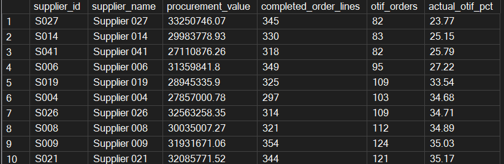
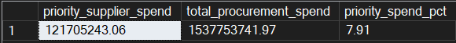
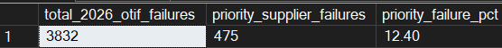

Completed project / SQL & procurement
SQL supply-chain analysisTurning purchase-order data into a focused supplier review.
I identified four suppliers with the weakest overall delivery performance, accounting for £121.7m in procurement spend across January 2025–August 2026. Their monthly results declined sharply from January 2026. I used SQL Server to check the data and identify where a supplier review should start.
Independent portfolio project · January 2025–August 2026
Explore the repository ↗Key findings
Four suppliers stand out.
I identified S027, S014, S041 and S006 as the weakest suppliers by overall on-time-in-full delivery (OTIF). Their monthly performance declines sharply from January 2026, giving the supplier review a specific period to investigate.
Lowest supplier OTIF results
S027, S014, S041 and S006 have the four lowest overall supplier OTIF rates, from 23.77% to 27.22%.

Priority supplier procurement spend
The four priority suppliers account for £121.7m in procurement spend, or 7.91% of the total across the analysis period.

Priority suppliers’ share of 2026 OTIF failures
These suppliers account for 475 of 3,832 failed eligible completed order lines in 2026: 12.40%. This measure covers 2026 only. The spend share above covers January 2025–August 2026, so the percentages are not a like-for-like comparison.

Spend with these suppliers spans all six part categories, with the largest values in Mechanical, Cold Chain and Electrical. Across five warehouses, OTIF ranges from 35.91% to 38.25%, so weak delivery performance is not confined to one warehouse.
What to do next
Start with a focused supplier review.
Meet the four weakest suppliers
About one in four eligible purchase-order lines from S027, S014, S041 and S006 arrived on time and complete. Procurement should review delivery plans with each supplier.
Check the share of order lines arriving on time and complete each month.
Find out what changed
Performance worsened sharply from January 2026. Procurement and Operations should review supplier communications, contracts, transport records and incidents from that period.
Check whether delivery performance improves after any agreed changes.
Protect the most exposed parts
These suppliers account for £121.7m in purchases, with the most spend in Mechanical, Cold Chain and Electrical parts. Category managers should give these parts priority in the review.
Check purchasing value and missed deliveries for each part category.
The purchase figure shows the scale of supplier activity, not a measured loss. The data shows where performance fell but not what caused it.
The business question
Which suppliers need closer attention?
I wanted to understand where delivery performance was weakest and how much procurement activity was associated with those suppliers. I joined purchase-order lines with supplier, part and warehouse information to examine the pattern from several angles.
The source contains 18,012 rows across 6,000 purchase orders. I kept the distinction between an order and an order line throughout the analysis.
Scope & measures
The procurement picture
OTIF means on time and in full. Here, 6,162 of 16,487 eligible completed order lines met both conditions. It is not the percentage of whole purchase orders delivered successfully.
My SQL workflow
Build the rules before reporting the results.
Profile and preserve
I checked missing identifiers, unmatched records, duplicate copies, date sequences and unusual quantities. I retained the source values and created a reusable cleaned view.
Apply eligibility rules
I used separate flags for duplicates, quantities and delivery analysis. A record could remain useful for procurement spend even when its delivery date was unsuitable for OTIF.
Analyse and reconcile
I used joins, conditional aggregation, CTEs and window functions, including LAG(), to compare suppliers and monthly trends. Final queries reconcile the headline counts, spend and OTIF results.
Spend uses 17,975 eligible lines. Applying all three analysis checks leaves 17,765 records; restricting the delivery measure to eligible completed lines leaves 16,487. These populations serve different questions.
View the five SQL scripts ↗Limitations & evidence
Identify the pattern, then investigate the cause.
The purchase-order data shows where and when delivery performance weakened. Supplier communications, transport records and operational incident details would be needed to establish why.
The 7.91% spend share covers the full analysis period, while the 12.40% failure share is limited to 2026. I keep those periods explicit rather than treating the two percentages as a like-for-like comparison.
My data, cleaning logic, business queries and final reconciliation are documented in the project repository. The recommendations are proposed actions, with no claim of a measured business improvement.